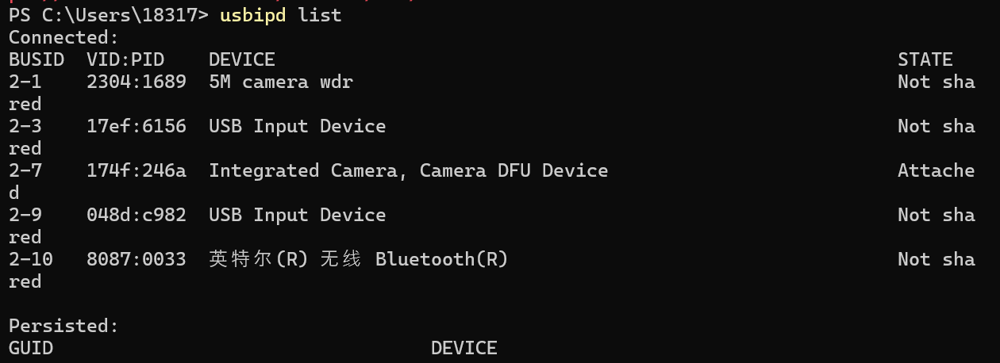
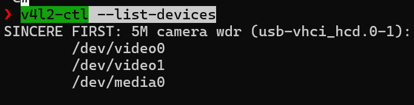
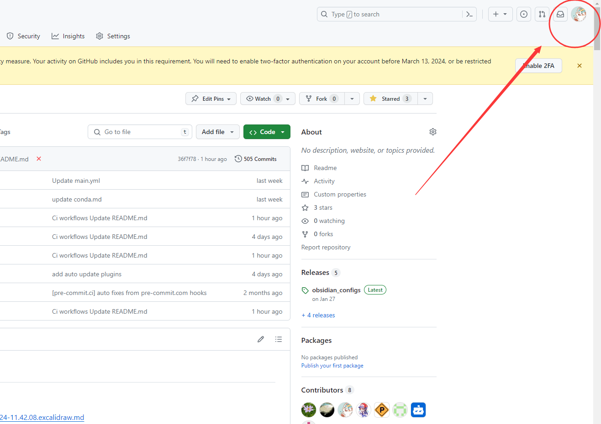
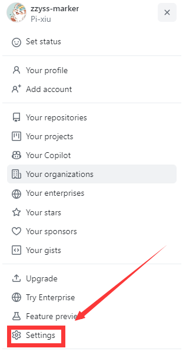
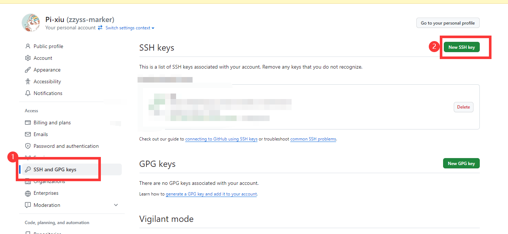
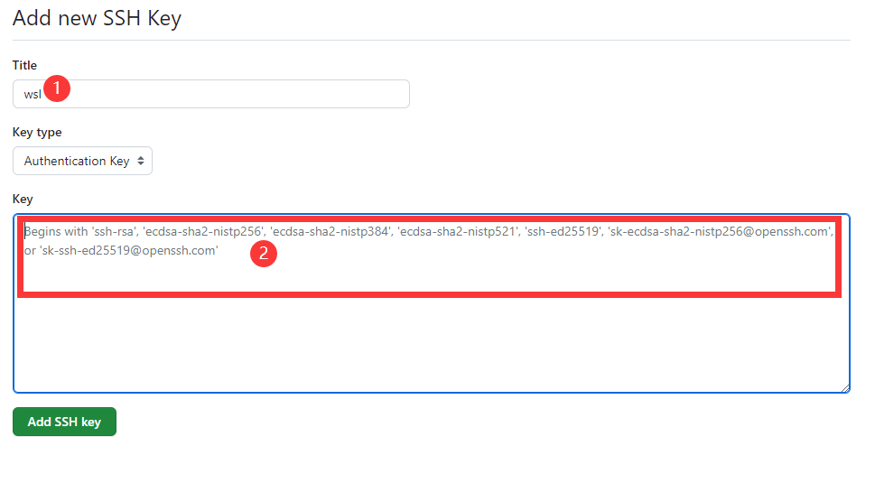

Wsl¶
Set Default User as Root¶
Set Default Distro¶
- enter wsl distro
- set default wsl distro
- then
Proxy¶
WSL2 网络的最终解决方案 - 知乎 Advanced settings configuration in WSL | Microsoft Learn
set .wslconfig to enable share proxy
😊best one for latest wsl
- in your
C:\Users\<username>create.wslconfig
if existed,open it by ps
- restart wsl
shell for auto set proxy as wsl start
set proxies manually and try set auto start with sh
- enable systemd
- add wget .sh for auto start with set proxies
# 使用wget下载脚本
wget -O /tmp/set_proxy_as_start_up.sh https://raw.githubusercontent.com/Atticuszz/PyGizmoKit/main/scripts/set_proxy_as_start_up.sh
# 给脚本执行权限
chmod +x /tmp/set_proxy_as_start_up.sh
# 执行脚本
sudo /tmp/set_proxy_as_start_up.sh
set proxies manually, connect to your clash proxy old way
- check clash proxy of
allow lanwifiipv4
# add following
http_proxy="http://192.168.0.107:7890"
https_proxy="http://192.168.0.107:7890"
ftp_proxy="ftp://192.168.0.107:7890"
no_proxy="localhost,127.0.0.1,::1"
- apply changes
Share Wsl Port in LAN¶
Accessing network applications with WSL | Microsoft Learn
use NAT mode works for me
- find
wsl iprelative to windows
{kind=link}
- enable port bind
wsl-ip=192.168.245.116port bind = 5000:5000
netsh interface portproxy add v4tov4 listenport=5000 listenaddress=0.0.0.0 connectport=5000 connectaddress=192.168.245.116
- access port via wifi ipv4,you can see it in clash or run
ipconfig
Install Wsl-linux Kernel to Enable Access to Usb Device¶
WSL/Connect USB devices/USB Camera.md at main · phuoctan4141/WSL · GitHub update from WSL support · dorssel/usbipd-win Wiki · GitHub
Download Kernel¶
- update to latest wsl
- check your version
- select Releases · microsoft/WSL2-Linux-Kernel to download via
wgetinto any dir such/usr/src/
cd /usr/src/
wget https://github.com/microsoft/WSL2-Linux-Kernel/archive/refs/tags/linux-msft-wsl-5.15.133.1.zip
unzip linux-msft-wsl-5.15.133.1.zip
# to see which folder to cd
ls
-> WSL2-Linux-Kernel-linux-msft-wsl-5.15.133.1
cd WSL2-Linux-Kernel-linux-msft-wsl-5.15.133.1
- Copy current configuration file.
You may need to set CONFIG_USB=y in .config prior to running menuconfigto get all options enabled for selection. use nano to check it
Config Kernel¶
Select different modules according to your own needs. (Press space to select or deselect.)
- Run
menuconfigto select kernel features to add.
all in device driver menu 2. These are the necessary additional features in menuconfig.
Device Drivers->USB support[*]
Device Drivers->USB support->Support for Host-side USB[M]
Device Drivers->USB support->Enable USB persist by default[*]
Device Drivers->USB support->USB Modem (CDC ACM) support[M]
Device Drivers->USB support->USB Mass Storage support[M]
Device Drivers->USB support->USB/IP support[M]
Device Drivers->USB support->VHCI hcd[M]
Device Drivers->USB support->VHCI hcd->Number of ports per USB/IP virtual host controller(8)
Device Drivers->USB support->Number of USB/IP virtual host controllers(1)
Device Drivers->USB support->USB Serial Converter support[M]
Device Drivers->USB support->USB Serial Converter support->USB FTDI Single Port Serial Driver[M]
Device Drivers->USB support->USB Physical Layer drivers->NOP USB Transceiver Driver[M]
Device Drivers->Network device support->USB Network Adapters[M]
Device Drivers->Network device support->USB Network Adapters->[Deselect everything you dont care about]
Device Drivers->Network device support->USB Network Adapters->Multi-purpose USB Networking Framework[M]
Device Drivers->Network device support->USB Network Adapters->CDC Ethernet support (smart devices such as cable modems)[M]
Device Drivers->Network device support->USB Network Adapters->Host for RNDIS and ActiveSync devices[M]
- These are additional features required for the camera.
Device Drivers->Multimedia support[M]
Device Drivers->Multimedia support[M]->Filter media drivers[*]
Device Drivers->Multimedia support[M]->Auto ancillary drivers[*]
Device Drivers->Multimedia support[M]->Media device types->Camera and video grabbers[*]
Device Drivers->Multimedia support[M]->Video4Linux options->V4L2 sub-device userspace API[*]
Device Drivers->Multimedia support[M]->Media drivers->Media USB Adapters[*]
Device Drivers->Multimedia support[M]->Media drivers->Media USB Adapters[*]->USB Video Class(UVC)[M]
Device Drivers->Multimedia support[M]->Media drivers->Media USB Adapters[*]->UVC input evnets device support[*]
⚠️ These instructions have changed. Previously, it was recommended to enable "Debug messages for USB/IP". However, debug messages have a huge negative performance impact on bulk transfers. Enabling debug messages is no longer recommended.
Compile and Build¶
In the following command the number '16' is the number of cores to use; run
getconf _NPROCESSORS_ONLNto find the number of cores.
- compile kernel
- Build USB/IP tools.
- Copy tools libraries location so usbip tools can get them.
- Install usb.ids so you have names displayed for usb devices.
- From the root path of the repo that you cloned, copy the image.
Config Wsl¶
Create a .wslconfig file on /mnt/c/Users/<username>/ and add a reference to the created image with the following.
then remember to restart wsl
Bind Usb Device¶
Connect USB devices | Microsoft Learn
usbipddownload from Releases · dorssel/usbipd-win
From an administrator Powershell on Windows, run this command. It will list all the USB devices connected to Windows.
- find usb device
i have two camera now, 2-1 and 2-7 
{kind=link}
-
bind and attach device
unattached occasionally, remember to
sudo chmod 777 /dev/video0
usbipd bind --busid 2-1
usbipd attach --wsl --busid 2-1
usbipd bind --busid 2-7
usbipd attach --wsl --busid 2-7
- check in wsl
{kind=link}
it shows that connect two devices successful
- the following in is optional, if get none before, run it
Test Device¶
At this moment, it can be found that it has appeared and can be tested with /dev/video0
- Examine device access.
2. Show webcamera information
{kind=link}
- Allow access by using
Test by Gui¶
{kind=link}
Push to Github via Ssh¶
解决在 wsl 中普通的网页令牌认证，推送代码的过程中出现了权限问题，使用 ssh 配 https 转发解决推送的身份验证问题
git ssh 命令详见 SSH，具体操作如下
- 添加 SSH 密钥
首先，将 SSH 私钥添加到 wsl 中,在 bash 中执行以下命令：
```powershell/bash ssh-keygen -t ed25519 -C "1831768457@qq.com"
请确保将 `1831768457@qq.com` 邮箱替换为你 GitHub 账户的实际邮箱。
用 vscode 连接 wsl 访问文件 `cat /root/.ssh/id_ed25519.pub` 或使用命令行
```bash
cat /root/.ssh/id_ed25519.pub
在 GitHub 中添加 ssh 密匙




添加 id_ed25519.pub 的内容到 2 的框中
{kind=link}
{kind=link}
{kind=link}
{kind=link}
- 通过 HTTPS 测试 SSH 连接
GitHub 支持通过 HTTPS 端口 443 进行 SSH 连接。这对于在某些网络环境下，标准 SSH 端口 22 被阻塞的情况特别有用。使用以下命令测试 SSH 连接：
如果是第一次连接到 GitHub 服务器，可能会提示您确认服务器的身份。输入 yes 以继续。
- 配置 SSH
为了使 SSH 连接自动使用 HTTPS 端口，需要配置 SSH 客户端。这涉及到编辑 ~/.ssh/config 文件（在 Linux 或 WSL 中）或 C:\Users\您的用户名\.ssh\config 文件（在 Windows 中）。
首先，使用 nano 编辑器（或任何您喜欢的文本编辑器）打开或创建配置文件：
然后，将以下内容添加到配置文件中：
这告诉 SSH 客户端，当尝试连接到 github.com 时，应该使用 ssh.github.com 作为主机名，并通过端口 443 进行连接。
- 测试 SSH 连接
配置完成后，您应该测试 SSH 连接以确保一切工作正常：
如果配置正确，GitHub 会通过 SSH 响应您的用户名，表示您已成功设置 SSH 连接。
- 尝试提交
使用 ssh 克隆仓库
使用 gateway 的 pycharm 连接 wsl，对仓库中的某个代码添加注释按 Ctrl+K，点击 commit and push，尝试提交，如果提交成功，说明配置正常，可以进行愉快的代码协作啦
Backlinks: